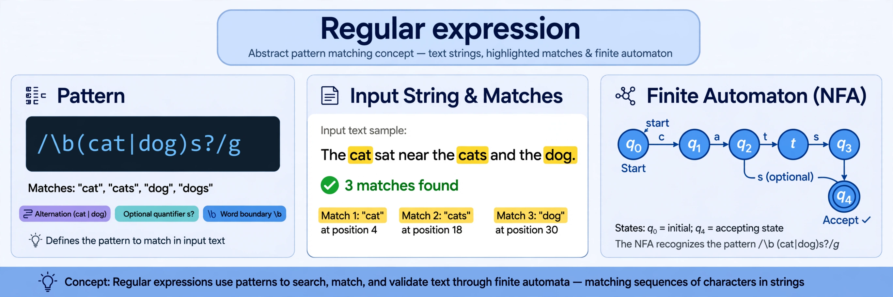

A regular expression (shortened as regex or regexp) is a sequence of characters that specifies a match pattern in text. Such patterns are used by string-searching algorithms for 'find' or 'find and replace' operations, and for input validation.
Basic constructs include literal characters, character classes such as [a-z], anchors ^ and $, quantifiers such as *, + and ?, alternation with |, and grouping with parentheses. In formal language theory, regular expressions describe exactly the regular languages recognised by finite automata, a correspondence established through Kleene's theorem.
Mathematician Stephen Cole Kleene developed the notation in the 1950s. Ken Thompson built regex search into the Unix editor QED and later ed, from which it spread to grep and many tools. Perl popularised a much richer syntax in the 1980s–90s, and 'Perl-compatible' (PCRE) engines became widespread.
Engines use either finite-automaton simulation (guaranteeing linear time) or backtracking (supporting features such as backreferences and lookahead, but with possible exponential worst cases). Regular expressions are supported in nearly all programming languages and text editors.